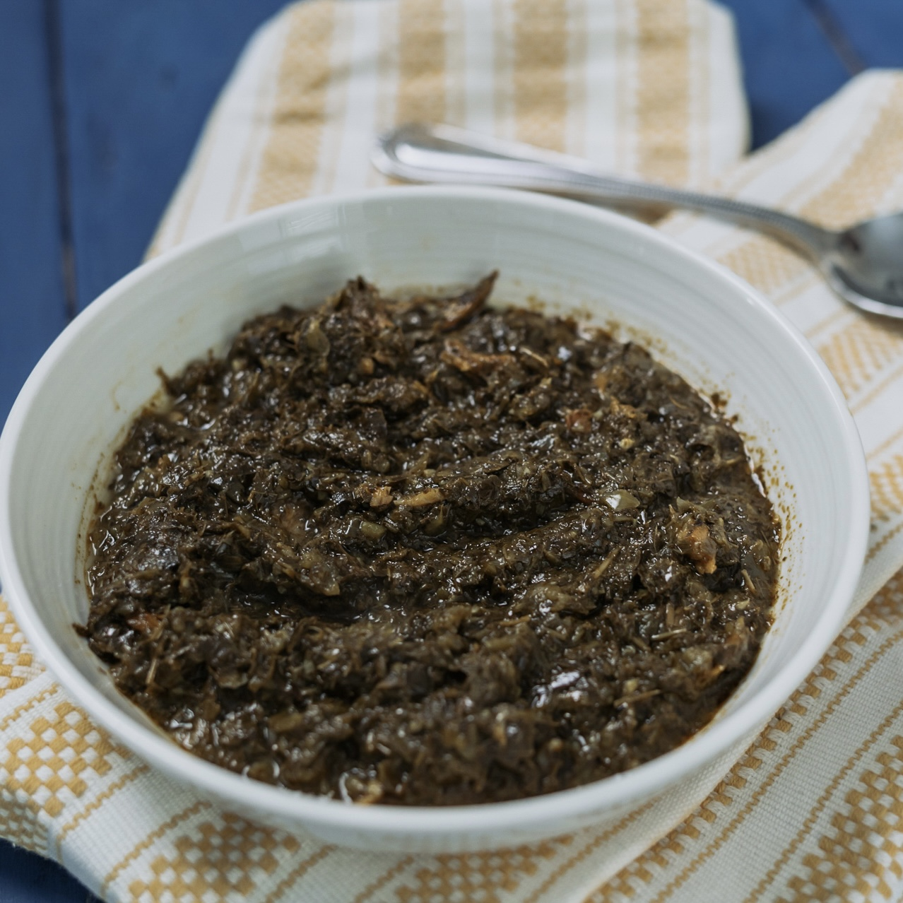

Pondu Recipe

Ingredients :
- 500 g of frozen cassava leaves
- A bunch greens onions
- 1 bulb of garlic
- 2 yellow onions
- 1 leek
- 2 green peppers
- 1 cup of palm oil
- 2 Tbsp of salt
- 1 smoked fish
- Green habanero pepper (optional)
Directions
- Rehydrate the smoked fish in boiled water for 20 min. Clean the fish by removing everything except the flesh. Set aside.
- Blend the onions, garlic, green onions, leek, and green peppers in a food processor.
- Put the cassava leaves with your onion mixture in a large pot with enough water to cover the cassava leaves on high heat.
- Add the salt and palm oil. Let it boil for 30 min.
- After 30 min, add the smoked fish, habanero pepper and let it boil for 1 hour.
- During that hour, keep adding 2 cups of water each time the water runs out.